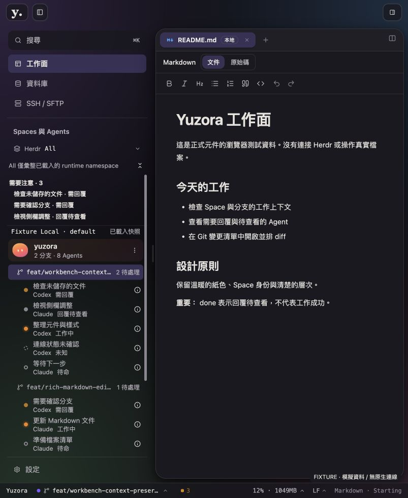

2026-09-08 · production UI 變更紀錄以平面側欄整合共用操作
參考使用者提供的 Orca 截圖，把搜尋、資料庫、SSH／SFTP 與設定移到左側。上方保留品牌、原生視窗控制與側欄切換；Space → worktree → Agent 層級維持現行語意。
結果：本次側欄調整可進入使用者測試。此結論限於本次 UI 變更與下列證據，不代表整個產品、live Herdr 或 release 已完成驗收。
配置與既有功能
| 位置 | zh-TW ／ en | 行為 |
|---|
| 頂部 | 搜尋 ／ Search | 開啟既有 Command Palette，保留 ⌘K／Ctrl+K。本次將使用者所稱「查詢」解讀為搜尋檔案與命令；Database 的 SQL 查詢維持資料庫工作面。 |
| 共用操作 | 工作面 ／ Workspace
資料庫 ／ Database
SSH / SFTP | 可返回先前工作模式；SFTP 開啟既有傳輸視窗。入口由 top-bar 移至側欄，並非新增後端能力。 |
| 中段 | Spaces 與 Agents ／ Spaces and Agents | 緊湊 Herdr Session 選單、Attention、可捲動的 Space／worktree／Agent 清單。All 保留僅彙整已載入 runtime 的提示。 |
| 固定底部 | 設定 ／ Settings | 開啟既有 SettingsDialog，不隨中段清單捲動。 |
延續暖色漸層、Space 持久化配色及角色、狀態文字與圖示。移除左側外框卡片感，改用平面導覽與分隔線；選取項維持低彩度背景。主要操作 14px；低高度時縮減行高與間距，不縮小文字。
實作範圍
src/app/AppShell.tsx：共用操作與設定入口搬移，保留既有 callback、模式及側欄寬度／收合狀態。src/app/workbench/workbench-shell.css：平面側欄、固定 footer、600px 以下高度的緊湊間距。src/app/workbench/HerdrLauncher.tsx、SpaceAgentTree.tsx、space-agent-sidebar.css：Session 入口與 project rows 的視覺整合；樹狀鍵盤說明移至 accessible description。src/lib/i18n/locales/{en,zh-TW}/workbenchShell.json：補齊兩語系文案。AppShell.layout.test.tsx、appShell.test.tsx、panels/panels.test.tsx：驗證入口所在區域、模式切換、收合／重開及新的 landmark 名稱。
已檢查 shadcn Sidebar／Button／Separator／ScrollArea／Kbd 文件，沿用本專案 Button、ButtonGroup、Separator、ScrollArea。這是 AppShell 擁有的 domain chrome，保留現行收合與 resize 狀態，避免再引入 SidebarProvider 的第二組狀態。未變更 runtime service、Bridge 或 Git 寫入流程。demo 目錄維持原狀。
已執行的驗證
| 證據類型 | 結果與限制 |
|---|
| Frontend 測試 | 最終完整執行：217 個測試檔、2,696 項測試通過。初次全跑遇到舊側欄 locator 失敗，已修正並完整重跑。其後僅追加低高度 CSS，以 build 與瀏覽器 DOM 尺寸驗證。 |
| Build／靜態檢查 | 最終 build 與兩份 TypeScript config 通過；lint 0 errors、56 warnings；git diff --check 通過。警告包含既有 lint 與 bundle size／dynamic import 訊息，未將它們記為零警告。 |
| 原生 App 實際點擊 | 設定、搜尋／Command Palette、SSH／SFTP 對話框均能開啟及關閉。未建立遠端連線、執行 SQL、傳送 terminal input 或停止 Herdr process。 |
| 瀏覽器 fixture 操作 | 使用 production AppShell 與元件、模擬資料。搜尋開啟、資料庫切換、返回原 README、側欄收合／重開已觀察。fixture 未掛載完整 Bridges，DB 的模擬讀取錯誤不作為真實連線故障證據。 |
| Responsive DOM 量測 | 1440×900、1280×800、1024×768 的 document width 未超出 viewport；1024×768 時清單高 337px。720×480 展開左側欄時，緊湊間距把清單高由 49px 改善為 122px，設定 footer 位於 y405–442，操作文字 14px。這些是 viewport 尺寸量測，不是 200% zoom 驗證。 |
| 視覺 fixture | 已查看 light 與 dark／violet。下圖為正常瀏覽器尺寸 803×978 的 dark fixture。兩個 host-qualified Named Sessions、八 Agents、長 branch/path 與停止的 remote session 皆為測試資料；不代表真實跨 Session 持續監聽。 |

瀏覽器 fixture，803×978；非原生 App 全功能證據。另一份 light-1440.png 為 in-app browser 裁切截圖，未用作完整 1440px 視覺驗收。
未驗證與後續界線
本次未重跑 Rust／Database integration、實際 DB 與 SSH 操作、完整 Terminal／native Preview 輸入焦點、控制權轉移、200% 真實 zoom 或全色盤 WCAG 對比矩陣。最小視窗可捲動清單仍較短，正常 ADE 多工建議使用較大視窗。這些未執行項目沒有填寫 PASS。
原生測試 App 已開啟；其 preview server 位於 http://localhost:1420，最新 build 已同步至 dist。最後追加的低高度 CSS 已由 fixture 驗證；為保留正在顯示的原生工作上下文，未強制重載原生 App。既有 native binary 的視窗控制位置未在此回合變更。
本回合 HEAD：711342825480a2edd5eb79005554ce828177e245。工作目錄包含先前 UI migration 的未提交變更，已保留。驗證紀錄：output/sidebar-navigation/full-tests-final.log、build-final.log、lint.log。未執行 stage、commit 或 push。